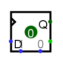
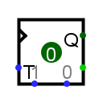
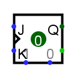
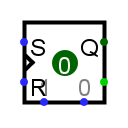
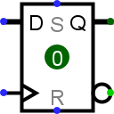
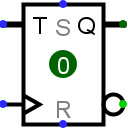
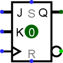
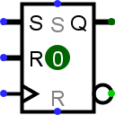

D/T/J-K/S-R 触发器
D/T/J-K/S-R 触发器
| 库: | 存储 | ||||||||||||||
| 介绍: | 2.0 Beta 1 | ||||||||||||||
| 外观符号: |
| D | T | J-K | S-R | |
|---|---|---|---|---|
| Logisim-evolution: |  |  |  |  |
| Evolution: |  |  |  |  |
行为
每个触发器存储一位数据，该数据通过东侧的 Q 输出发出。 通常，可以通过西侧的输入来控制该值。 特别是，当每个触发器上用三角形标记的 时钟 输入从 0 上升到 1（或按照配置）时，该值会发生变化； 在此上升沿，该值根据下表发生变化。
| D 触发器 | T 触发器 | J-K 触发器 | S-R 触发器 | ||||||||||||||||||||||||||||||||||||||||||
|---|---|---|---|---|---|---|---|---|---|---|---|---|---|---|---|---|---|---|---|---|---|---|---|---|---|---|---|---|---|---|---|---|---|---|---|---|---|---|---|---|---|---|---|---|---|
|
|
|
|
描述触发器不同行为的另一种方式是用英文文本。
-
D 触发器 ：当时钟触发时，触发器记住的值成为 D 输入的值 ( Data ) 那一瞬间。
-
T 触发器： 当时钟触发时，触发器记住的值会切换或保持不变，具体取决于 T 输入（ 切换< /em>) 是 1 或 0。
-
J-K 触发器： 当时钟触发时，如果 J 和 K 输入均为 1 且 如果两者都为 0，则该值保持不变； 如果它们不同，则如果 J （ Jump ）输入为 1，则该值变为 1；如果 K （ Kill）输入为 0，则该值变为 0 ）输入为1。
-
S-R触发器： 当时钟触发时，如果 R 和 S 都为0，触发器记住的值保持不变，变为 如果 R 输入（ Reset ）为 1，则为 0；如果 S 输入（ Set ）为 1，则变为 1 1. 如果两个输入均为 1，则行为未指定。（在 Logisim 中，触发器中的值保持不变。）
默认情况下，时钟在上升沿触发，即当时钟输入从 0 变为 1 时。但是，触发属性允许其更改为下降沿（当时钟输入从 1 变为 0 时）， 高电平（时钟输入为1期间），或低电平（时钟输入为0期间）。 电平触发选项对于 T 和 J-K 触发器不可用，因为当被告知要切换不确定的时间量时，触发器的行为是不可预测的。
引脚
- 西边，以三角形标记（输入，位宽1）
- 时钟输入：在该输入值从 0 切换到 1 的瞬间（上升沿），该值将根据西沿的其他输入进行更新。 只要该值保持为 0 或 1，西边缘的其他输入就不会产生任何影响。
- 西边缘，其他标记的引脚（输入，位宽 1）
- 这些输入控制触发器的值在时钟上升沿期间如何变化。 它们的确切行为取决于触发器； 上表总结了它们的行为。
- 东边，标记为 Q ，北端（输出，位宽1）
- 输出触发器当前存储的值。
- 东边，南边（输出，位宽1）
- 输出触发器当前存储的值的补码。
- 南边、东边（输入，位宽1）
- 异步复位：当为0或未定义时，该输入无效。 只要它为 1，触发器的值就固定为 0。这是异步发生的，即不考虑当前时钟输入值。 只要该值为 1，其他输入就没有影响。
- 南边、西边或北边（输入，位宽1）
- 异步设置：当为0或未定义时，该输入无效。 当为 1 时，触发器的值固定为 1。这是异步发生的，即不考虑当前时钟输入值。 只要该输入为 1，除异步复位输入具有优先级外，其他输入均无效。
属性
- 扳机
-
配置如何解释时钟输入。
上升沿
值表示触发器应在时钟从0上升到1的瞬间更新其值。下降沿
值表示应在时钟从0上升到1时更新其值。 时钟从 1 下降到 0 的瞬间。高电平
值表示每当时钟输入为 1 时触发器应不断更新。低电平
值表示 当时钟输入为 0 时，它应该连续更新。请注意，后两个选项对于 T 和 J-K 触发器不可用。 - 标签
- 与触发器关联的标签内的文本。
- 标签字体
- 用于呈现标签的字体。
- 外观
- Classic Logisim ：将触发器呈现为 logisim Logisim-Holy Cross / Logisim-Evolution 的遗产：以 IEC 方式全新呈现触发器
Poke 工具行为
使用 Poke 工具单击触发器会切换触发器中存储的位，除非异步设置/重置输入当前固定触发器的值。
文本工具行为
允许编辑与组件关联的标签。
返回 电路元件库参考手册